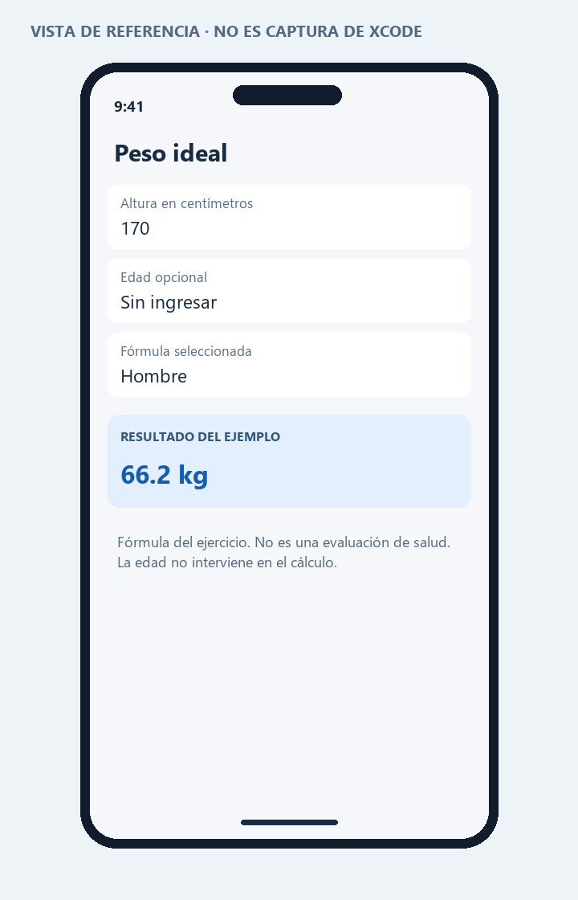

PROGRAMACIÓN EN MÓVILES AVANZADO · S08
03 · Ventana03: peso ideal de la guía
Actividad de las páginas 8–10. Se conserva la fórmula del material, con validación de entradas.
Hombre: 50 + 0.9 × (altura en cm − 152)
Mujer: 45.5 + 0.9 × (altura en cm − 152)
La edad es opcional y no participa en esta fórmula. Se aceptan coma o punto decimal, sin separadores de miles. La altura debe ser positiva y el resultado también. Las cotas de entrada son controles del ejercicio, no criterios clínicos.
Es un ejercicio de programación que reproduce la guía. No establece un peso saludable individual ni sirve para diagnosticar o indicar tratamientos.
Interfaz
Dos campos editables, un selector de fórmula y un resultado que cambia al editar. Una entrada inválida sustituye el resultado por un mensaje, evitando conservar una cifra antigua.
| Entrada | Operación | Esperado |
|---|
| 170 cm, Hombre | 50 + 0.9 × 18 | 66.2 kg |
| 170 cm, Mujer | 45.5 + 0.9 × 18 | 61.7 kg |
| 152 cm, Hombre | 50 + 0 | 50.0 kg |
| 170,6 cm, Mujer | 45.5 + 0.9 × 18.6 | 62.2 kg al mostrar un decimal |
| Altura vacía o negativa | Entrada inválida | Mensaje; sin resultado |
| Edad vacía | Permitida | No cambia el resultado |
Código y ejecución
Abre Proyecto/PesoIdeal.xcodeproj en Xcode 15 o posterior, con un simulador iOS 17 o posterior. El código principal está en Proyecto/PesoIdeal/Ventana03.swift. Consulta las instrucciones de ejecución.
La estructura de proyecto está preparada. La compilación y las capturas reales quedan pendientes de ejecutar en una Mac; no se presentan como pruebas realizadas.
Vista de referencia
Representación de la interfaz y los datos de ejemplo. No es una captura del simulador. La vista ejecutable se encuentra en el archivo SwiftUI y en su #Preview.
